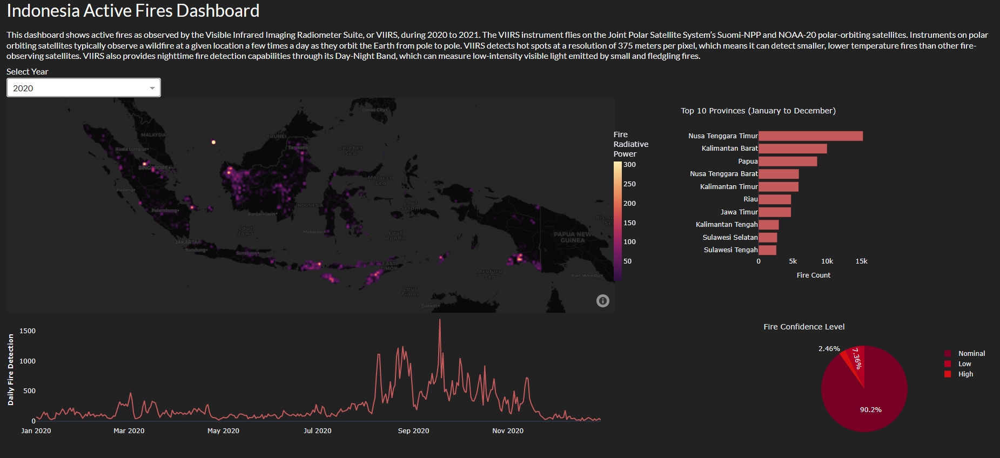

Indonesia Active Fires Dashboard
Published: 11.10.2022
Well, I suppose I should tell you about this project I've been working on. It's a dashboard that shows active fires in Indonesia from 2020 to 2021, using data from the Visible Infrared Imaging Radiometer Suite, or VIIRS for short. These instruments are on the Suomi-NPP and NOAA-20 polar-orbiting satellites, in case you were wondering. Not that it's particularly thrilling, but it does what it's supposed to do.

The dashboard has a density map of fire locations, as well as some charts that display the top fire-prone provinces, daily fire detections, and confidence levels of detected fires. You can also filter the data by year, if for some reason you're interested in that sort of thing. It's not the most exciting project in the world, but it does give you an idea of the active fires situation in Indonesia during those years.
So, there you have it. If you're into data visualization and learning about active fires in Indonesia, this might be the sort of thing you'd want to check out. Feel free to leave suggestions or comments if you have any ideas on how to improve it or if you find any value in this rather mundane project.